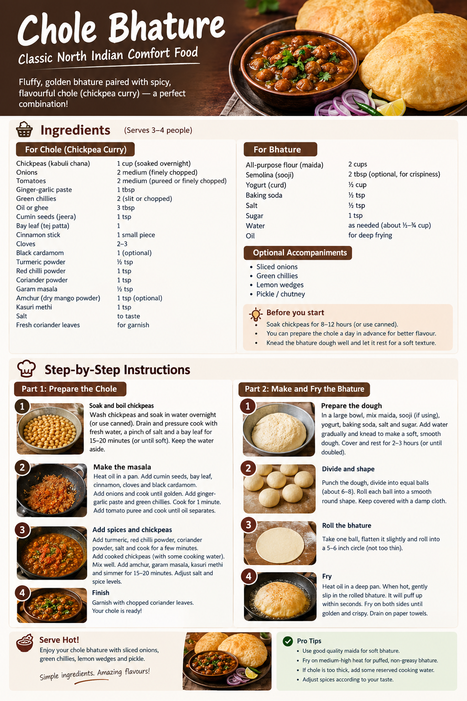

Chole Bhature Recipe
Back to Home

Ingredients To Make Chole Bhature:
- 1 cup dry kabuli chana (chickpeas)
- 2 medium onions, finely chopped
- 2 medium tomatoes, pureed
- 1 tbsp ginger-garlic paste
- 2 green chillies
- 3 tbsp oil
- 1 tsp cumin seeds
- ½ tsp turmeric powder
- 1 tsp red chilli powder
- 1 tsp coriander powder
- 1 tsp chole masala
- ½ tsp garam masala
- Salt to taste
- Fresh coriander for garnish
- Optional: tea bag for darker-coloured chole, bay leaf and amchur
Steps To Make Delicious Chole Bhature
- Soak the dry kabuli chana in water for 2-3 hours.
- Pressure cook the chana with salt and water until soft.
- Heat oil in a pan and add cumin seeds.
- Add chopped onions and cook until golden brown.
- Add ginger-garlic paste and green chillies.
- Include tomato puree and cook for 5 minutes.
- Add all the spices and cook for another 2 minutes.
- Stir in the cooked chana and mix well.
- Simmer for 10-15 minutes on low heat.
- Garnish with fresh coriander and serve hot with bhature.